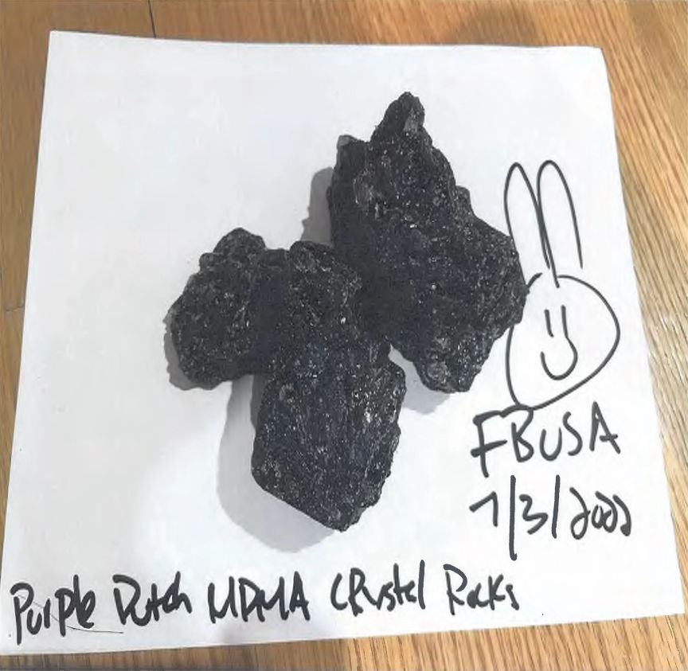
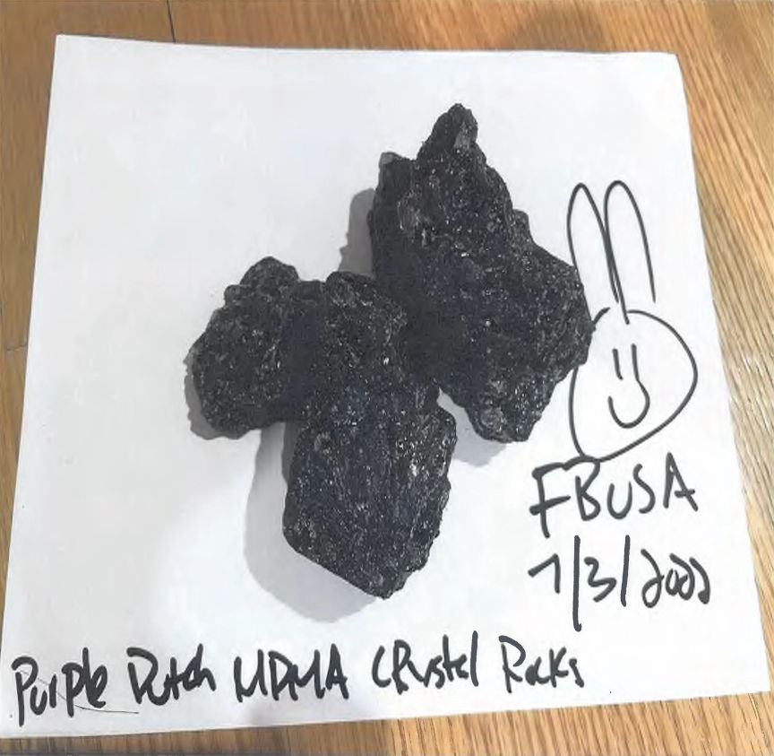

Dark Web Drugs Vendor FireBunnyUSA Busted
Manhattan District Attorney indicted five defendants for their roles in a dark web drug trafficking operation that raked in close to $8 million.
According to a press release by Manhattan District Attorney, Nan Wu, 35, of New York, and his accomplices distributed large quantities of cocaine, MDMA, Ketamine, and other drugs through the FireBunnyUSA vendor profile on multiple dark web marketplaces. The vendor allegedly shipped more than 10,000 drug packages to buyers all over the US.
Wu's co-conspirators include; Peng Peng Tang, 30, Bowen Chen, 38, Zixiang Lin, 22, and Katie Montgomery, a USPS employee.
According to court documents, the FireBunnyUSA vendor accounts operated from January 2019 through August 2022. In the course of the investigations that run from June 2021 to August 2022, the investigators purchased varying quantities of cocaine, MDMA, and Ketamine, in 11 undercover purchases. In one of the purchases, the investigators reportedly paid approximately $2,800 for 60 grams of cocaine.

The investigations revealed Lin was in charge of renting storage facilities, procuring packaging and shipping material, and mailing the drug packages to their respective buyers.
Montgomery advised Wu on how he would avoid detection when importing drugs into the United States. She also updated Wu on the status of his drug packages.
Since WU was always on the move, Tang was the one charged with helping him find homes and office spaces to rent. Tang also helped in the laundering of the operation's proceeds.
The investigators executed a search warrant on WU and TANGs apartment in July 2022. The search resulted in the seizure of 1 kilogram of Ketamine, approximately 1,200 MDMA pills, and other drugs. The investigators also found and seized phones and drug packaging material.

The seized phones gave the investigators access to Wu's Wickr and Telegram. The investigators found communications with suppliers discussing the purchase and importation of Ketamine and MDMA. The investigators also found communications between Wu and suspected buyers.
FireBunnyUSA briefly ceased operations following Wu's arrest. Investigations revealed that Chen took over FireBunnyUSA's vendor accounts and resumed operations. The investigators arrested him in August 2022.
The investigations revealed that Wu and Tang received approximately $8 million in bitcoin in the course of the drug trafficking operation.
The duo allegedly laundered more than $7.2 million of the proceeds. Approximately $734,000 was cashed out through Wu and Tang's accounts on undisclosed US-based exchanges. Another $2.4 million was cashed out as Chinese Yen via an undisclosed exchange.
The indictment charged the defendants as follows;
Nan Wu
Peng Peng Tang
BOWEN CHEN
Zixiang Lin
Katie Montogomery
FireBunnyUSA
According to a press release by Manhattan District Attorney, Nan Wu, 35, of New York, and his accomplices distributed large quantities of cocaine, MDMA, Ketamine, and other drugs through the FireBunnyUSA vendor profile on multiple dark web marketplaces. The vendor allegedly shipped more than 10,000 drug packages to buyers all over the US.
Wu's co-conspirators include; Peng Peng Tang, 30, Bowen Chen, 38, Zixiang Lin, 22, and Katie Montgomery, a USPS employee.
According to court documents, the FireBunnyUSA vendor accounts operated from January 2019 through August 2022. In the course of the investigations that run from June 2021 to August 2022, the investigators purchased varying quantities of cocaine, MDMA, and Ketamine, in 11 undercover purchases. In one of the purchases, the investigators reportedly paid approximately $2,800 for 60 grams of cocaine.

The investigations revealed Lin was in charge of renting storage facilities, procuring packaging and shipping material, and mailing the drug packages to their respective buyers.
Montgomery advised Wu on how he would avoid detection when importing drugs into the United States. She also updated Wu on the status of his drug packages.
Since WU was always on the move, Tang was the one charged with helping him find homes and office spaces to rent. Tang also helped in the laundering of the operation's proceeds.
The investigators executed a search warrant on WU and TANGs apartment in July 2022. The search resulted in the seizure of 1 kilogram of Ketamine, approximately 1,200 MDMA pills, and other drugs. The investigators also found and seized phones and drug packaging material.
The seized phones gave the investigators access to Wu's Wickr and Telegram. The investigators found communications with suppliers discussing the purchase and importation of Ketamine and MDMA. The investigators also found communications between Wu and suspected buyers.
FireBunnyUSA briefly ceased operations following Wu's arrest. Investigations revealed that Chen took over FireBunnyUSA's vendor accounts and resumed operations. The investigators arrested him in August 2022.
The investigations revealed that Wu and Tang received approximately $8 million in bitcoin in the course of the drug trafficking operation.
The duo allegedly laundered more than $7.2 million of the proceeds. Approximately $734,000 was cashed out through Wu and Tang's accounts on undisclosed US-based exchanges. Another $2.4 million was cashed out as Chinese Yen via an undisclosed exchange.
The indictment charged the defendants as follows;
Nan Wu
- One count of operating as a major trafficker.
- Four counts of criminal sale of a controlled substance in the second degree.
- One count of money laundering in the first degree.
- One count of criminal sale of a controlled substance in the third degree.
- One count of conspiracy in the second degree.
- One count of criminal possession of a Controlled Substance in the second degree.
- One count of criminal possession of a controlled substance in the fourth degree.
- Five counts of criminal possession of a controlled substance in the fifth degree.
- One count of criminal sale of a controlled substance in the fifth degree.
Peng Peng Tang
- One count of money laundering in the first degree.
- One count of conspiracy in the second degree.
- One count of criminal possession of a Controlled Substance in the second degree.
- One count of criminal possession of a controlled substance in the fourth degree.
- Five counts of criminal possession of a controlled substance in the fifth degree.
BOWEN CHEN
- One count of criminal sale of a controlled substance in the first degree.
- One count of conspiracy in the second degree.
- Four counts of criminal sale of a controlled substance in the third degree.
Zixiang Lin
- One count of conspiracy in the second degree.
Katie Montogomery
- One count of conspiracy in the second degree.